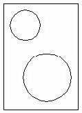
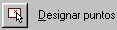

9. Barra de herramientas "Dibujo" (II).
TEXTO: permite introducir únicamente una línea de texto.
TEXTOM: permite, mediante un cuadro de diálogo, introducir líneas múltiples.
1. Accede al menú Dibujo - Texto - Texto en una sola línea (o pulsa el botón
2. Como punto inicial, pincha en cualquier parte de la pantalla.
3. Como altura, pulsa Intro para aceptar la que te ofrece el programa.
4. Como ángulo de rotación, Intro para aceptar 0 grados.
5. Escribe una palabra cualquiera y pulsa Intro.
6. Escribe otra palabra cualquiera y pulsa otro Intro.
7. En la tercera línea, pulsa Intro sin introducir ningún texto.
8. Vuelve a repetir la misma orden.
9. Pulsa la letra U para acceder al menú de justificación.
10. Escribe C para centrar el texto.
11. Como punto central, pincha clic en cualquier parte.
12. Realiza la misma operación de antes para escribir un par de palabras.
Observa en la siguiente imagen varios tipos de alineación con respecto al mismo punto:
13. Prueba a introducir distintos tipos de alineación, rotación del texto, altura, etc.
1. Inicia la orden para escribir un nuevo texto.
2. Cuando aparezca el mensaje del texto a introducir, escribe: Ángulo de 45%%d
3. Pulsa Intro dos veces para aceptar el nuevo texto.
El símbolo se ha escrito en la pantalla.
1. Escribe la orden DDEDIC
2. Pincha en el último texto que acabas de escribir.
3. Modifica a voluntad algún parámetro o bien déjalo como está.
Modificar un texto desde el cuadro
de Propiedades
El comando PROPIEDADES o bien el botón permiten acceder a un cuadro especial,
diferente a todos los vistos hasta ahora.
1. Selecciona el último texto.
2. Accede a sus propiedades desde
Desde aquí podemos cambiar el estilo de texto, línea, justificación, color, etc. Échale un vistazo para familiarizarte con él. Observa que en este cuadro no existe el botón Aceptar, por lo que debes cerrrar el cuadro desde su botón .
Modifica alguna propiedad si lo deseas y cierra el cuadro.
Vamos a crear una variante del estilo Standard, utilizado hasta ahora:
1. Accede al menú Formato - Estilo de texto o bien escribe la orden ESTILO.
2. Activa la casilla Vertical
3. Coloca en 5 la Altura y en 2 la Relación anchura/altura. Observa el texto de ejemplo cómo va cambiando.
4. Click en el botón Nuevo.
5. Escribe Vertical como nombre del nuevo estilo y cierra el cuadro de diálogo.
6. Escribe la orden DDEDIC y selecciona un texto cualquiera de la pantalla.
7. Accede a la pestaña superior Propiedades, despliega la lista Estilo y elige el estilo que acabamos de crear.
8. Acepta y observa los cambios.
1. Inicia la orden para crear una polilínea escribiendo POL.
2. Como punto inicial, pulsa clic en cualquier parte de la pantalla.
Si ahora pulsamos otro clic, se creará una línea como si de cualquier línea se tratase. Lo que haremos será modificar alguna opción:
3. Escribe G para cambiar el grosor.
4. Como grosor inicial, escribe 1.
5. Como grosor final, escribe 2.
6. Pulsa Intro. Finaliza la orden para ver el resultado.
1. Escribe POLÍGONO o selecciona Dibujo - Polígono o pulsa el botón .
2. Como número de lados, indica 8.
3. Pincha clic en cualquier parte de la pantalla para designar un punto central.
Ahora, podemos elegir dos formas: Inscrito y Circunscrito. Se nos ofrecerá un radio de un círculo imaginario, y el polígono se dibujará dentro o fuera de ese círculo. En el caso del polígono Inscrito, el radio se mide desde el centro hasta un vértice, mientras que en el Circunscrito se mide desde el centro hasta el punto medio de un lado.
| |
|
|
| Inscrito | Circunscrito |
Lado |
4. Pulsa Intro para aceptar la opción Inscrito y dibuja un polígono de prueba.
5. Dibuja dos polígonos más utilizando las otras dos opciones.
1. Elimina cualquier objeto de la pantalla.
2. Pulsa el botón o bien escribe lineam en la línea de comandos.
3. Si aceptamos la opción por defecto, funciona igual que al dibujar líneas normales.
1. Selecciona la herramienta Spline de la barra de herramientas.
2. Designa el primer punto.
3. Designa el segundo punto más o menos a una unidad por encima del lado izquierdo del primer punto.
AutoCAD mostrará una spline que tendremos que arrastrar con el cursor cuando seleccionemos el tercer punto. Tendremos una total libertad para ir marcando puntos.
4. Cuando quieras terminar de designar puntos, pulsa Intro.
5. A la pregunta de Precise tangente inicial, designa un punto por encima del primero que hemos marcado.
6. A la pregunta de Precise tangente final, designa un punto por debajo del primero.
Las splines pueden modificarse con el comando EDITSPLINE. Mientras creamos una spline, podemos ajustar tolerancia, es decir, determinar el grado al que todos los puntos seleccionados obligarán a la curva.
Puntos
Los puntos son marcas
que pueden servirnos tanto para formar parte de los dibujos como para señalar
puntos en la pantalla que nos servirán como apoyo o referencia para otras
entidades.
1. Selecciona la herramienta Dibujo en la barra de herramientas.
2. Designa varios puntos en la pantalla
3. Pulsa Esc para dejar de designar puntos.
4. Accede al menú Formato - Tipo de punto y elige otro tipo del que tengas en pantalla.
Observa que AutoCAD ha modificado el aspecto de los puntos en pantalla.
Sombrear objetos
El sombreado resalta el
objeto y puede dotarle de color para diferenciarlo y resaltarlo de los demás.
Podemos utilizar este comando de varias formas: marcando los objetos a
sombrear, o marcando el contorno que queramos sombrear:
1. Dibuja un objeto similar al siguiente:

2. Accede al menú Dibujo - Sombreado o bien el botón
3. Pulsa en los puntos suspensivos al lado de la opción Patrón
4. Observa la lista de patrones para el sombreado. Recorre la lista y elige el patrón NET. Acepta.
5. Pulsa el botón y selecciona los dos círculos.
6. Pulsa el botón derecho y elige la opción Vista preliminar.
7. Vuelve a pulsar el botón derecho para volver al menú anterior.
8. Pulsa ahora el botón  y pulsa en medio de los dos círculos.
9. Realiza la misa operación anterior (Vista preliminar y volver al menú).
10. Vuelve a pulsar la opción Seleccionar objetos.
11. Selecciona los tres objetos y muestra una vista preliminar. Observa el resultado.
12. Cambiar el ángulo a 45 y la escala a 2. Mira cómo queda.
13. Haz clic en la ficha Avanzadas.
En el panel Estilo de detección de islas hay 3 opciones; Normal, sombrea áreas de fuera a dentro, Exterior sombrea solo el área exterior, e Ignorar sombrea todos los contornos interiores.
14. Prueba distintos métodos sobre los objetos de la pantalla y observa las diferencias.
Un sombreado puede borrarse como si de un objeto cualquier se tratase. Simplemente pulsando clic en el sombreado y pulsando la tecla Supr.
Para editar el sombreado podemos acceder a la pantalla pulsando el botón derecho sobre cualquier sombreado y eligiendo la opción Editar sombreado.
La propiedad Asociativa de la ficha Avanzadas hace que el sombreado se actualice junto al objeto modificado (escala, posición...)
La opción Heredar propiedades hace que se copien las características de sombreado de otro objeto.
Podemos asimismo definir un patrón para utilizarlo ().
1. Inicia la orden para dibujar una arandela.
2. Indica el diámetro interior en 25.
3. Indica el diámetro exterior en 30.
4. Como centro, pincha clic en cualquier punto de la pantalla.
5. Pulsa Esc para terminar de dibujar arandelas.
6. Dibuja varias arandelas utilizando distintos grosores o el ratón cuando te pida el radio.
1. Haz un zoom del objeto de forma que ocupe casi toda la pantalla.
2. Escribe RELLENAR.
3. Escribe DES
4. Escribe REGEN para regenerar la pantalla.
5. Vuelve a activar RELLENAR.
1. Selecciona el botón
2. Selecciona el último texto.
3. Selecciona otro texto en pantalla.